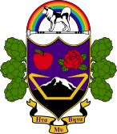
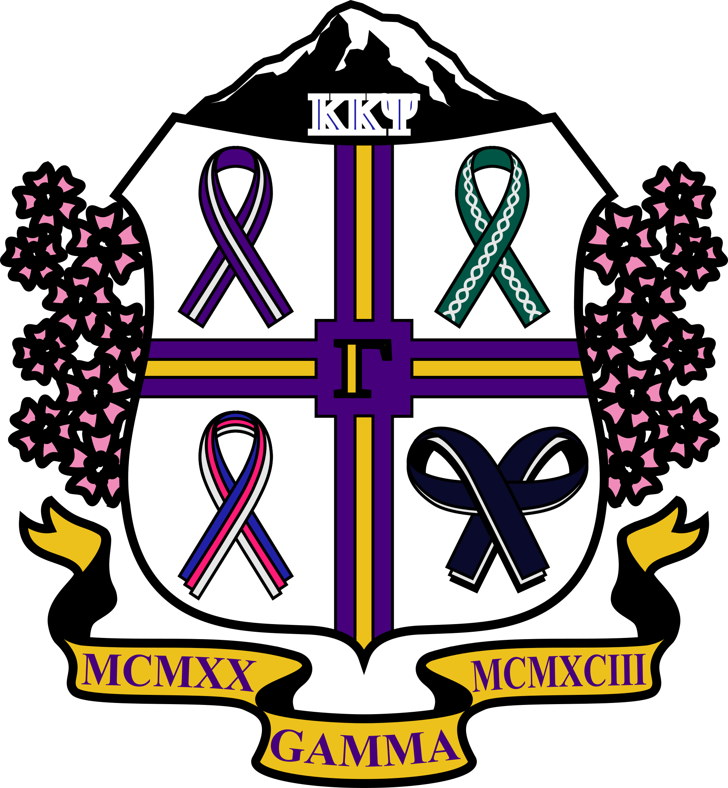

These are vairous things I have made and wanted to share.
Animation of a Sony Mavica camera saving a photo to a floppy disk.
Frames were recreated in inkscape from reference video and animated in screen2gif.
Logo of the Seattle-Everett Interurban Railway, which ran from 1910 to 1939 and now is a trail.
Logo was recreated in inkscape from a reference image.

Logo of Eta Mu Beta, a fake fraternity that serves as a generic name for projects involving marching band,
such as the Seattle Pride Parade group and the youtube channel that digitizes old marching band videos.
Logo was created in inkscape, with sub assets created mostly taken from the internet.

Logo of the Gamma Chapter of Kappa Kappa Psi, made to replace the old logo that was a bit too close to the national logo.
Logo was created in inkscape, with sub assets created mostly taken from the internet with the exception of the ribbons.
Follows nation and school branding guidelines and includes many chapter specific elements.